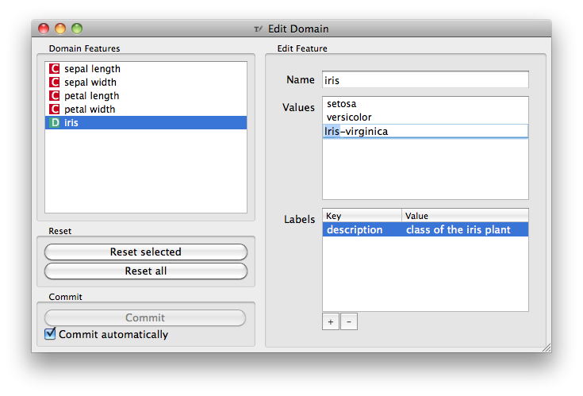

This is documentation for Orange 2.7. For the latest documentation, see Orange 3.
Edit Domain¶

Signals¶
- Inputs:
- Data (Orange.data.Table)
Input data set
- Outputs
- Data (Orange.data.Table)
Edited output data set
Description¶
This widget can be used to edit/change the domain of the data set.
All features (including meta attributes) from the Data input data set are listed in the Domain Features list box on the left. Selecting one feature displays an editor in the right part.
The name of the feature can be changed in the Name line edit.
For Discrete features the value names can also be changed in the Values list box.
Additonal feature annotations can be added/removed/edited in the Labels box. To add a new label click the + button and add the Key and Value columns of the new entry. Selecting an existing label and pressing - will remove the annotation.
To revert the changes made to a feature press Reset Selected button in the Reset box while the feature is selected in the Domain Features list. Pressing Reset All will reset all features in the domain at the same time.
Pressing Commit button will send the changed domain data set on the Data output channel.